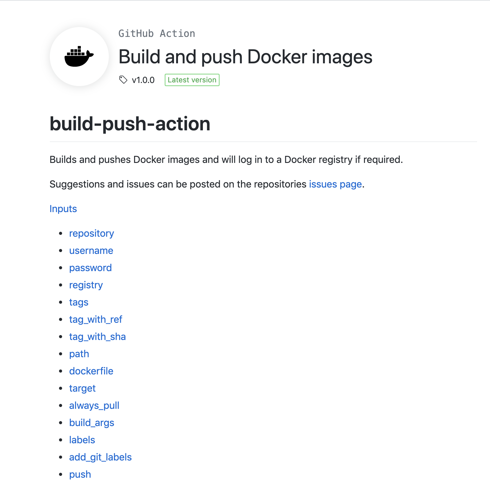
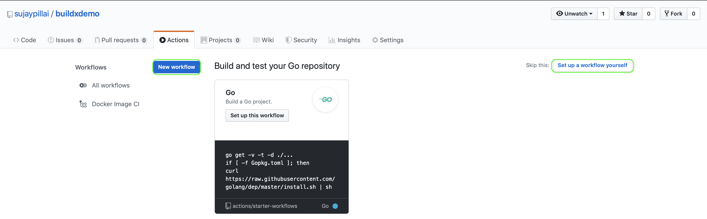
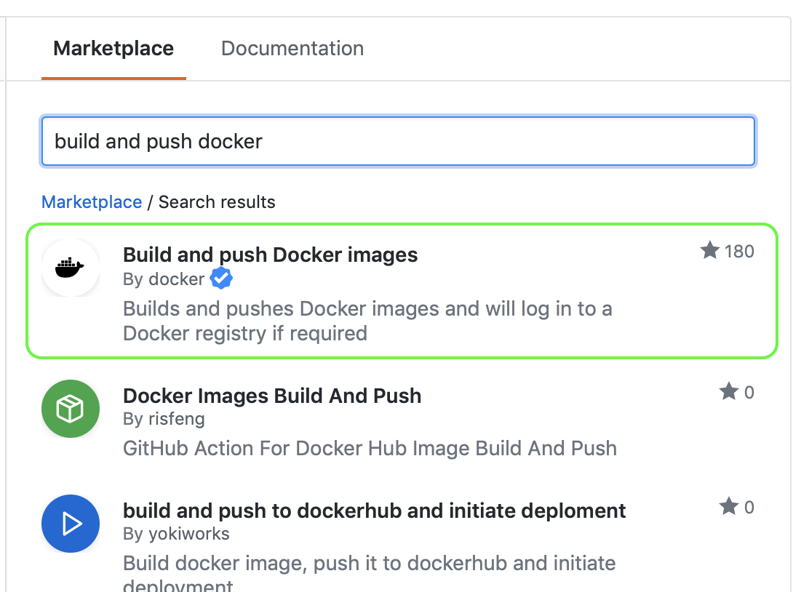
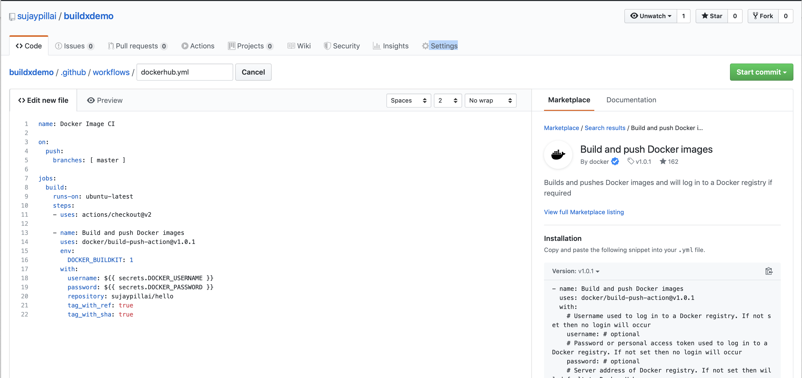
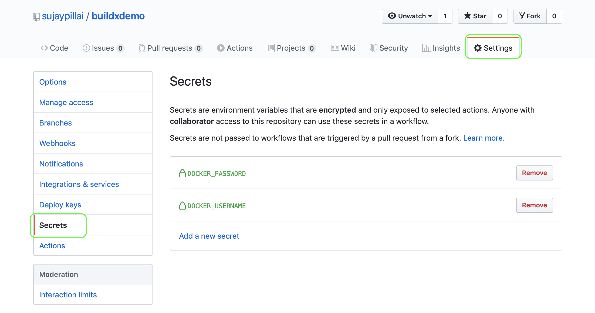
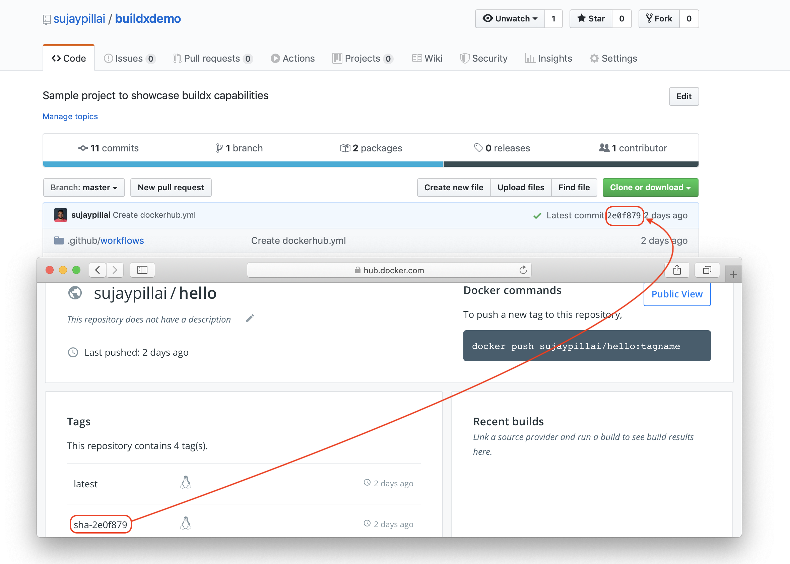

 Last week Docker released its first Github Action called docker/build-push-action . This has been developed by Docker after keeping into consideration to simplify basic workflow of: building an image, tagging it, logging into Docker Hub, and pushing the image to a registry.
My previous blog Docker images on Github Package Registry showcased how we could achieve the above workflow with Github package registry. If you look at the workflow definition dockerimage.yml for this we had to write three small actions to achieve the above workflow. Lets replace [we will actually create a new workflow definiton] this with Docker’s new GitHub action.
You can create more than one workflow in a repository. You must store workflows in the .github/workflows directory in the root of your repository.
Adding a workflow template:
On the main page of your repository navigate to Actions and click on New workflow button.
If you don’t see Build and push Docker Images template in the list then click on Set up a workflow yourself

Search for the template Build and push Docker images from the Marketplace.

Make the changes in the editor and commit the action to your repository using the Start Commit button.

If you check the workflow definition it has an environment variable DOCKER_BUILDKIT set to 1 which helps to switch to the new builder mechanism available in Docker from 18.09.
Creating encrypted secrets:
Encrypted secrets allow you to store sensitive information, such as access tokens, in your repository.
-
Under your repository name, click
Settings>Secrets.  -
Add the two secrets
DOCKER_USERNAME(your dockerhub username) &DOCKER_PASSWORD(your PAT token from Docker Hub).Docker Hub lets you create personal access tokens as alternatives to your password. Refer this link to create your PAT.
-
You can access these secrets in your workflow using the
secretscontext.1 2 3with: username: ${{ secrets.DOCKER_USERNAME }} password: ${{ secrets.DOCKER_PASSWORD }}
Tagging options:
There are 3 options to tag your images with this action:
-
tags- Comma-delimited list of tags. These will be added to the registry/repository to form the image’s tags.Example:
1tags: tag1,tag2 -
tag_with_ref- Boolean value. Defaults tofalse. Automatically tags the built image with the git reference. The format of the tag depends on the type of git reference with all forward slashes replaced with-.For pushes to a branch the reference will be
refs/heads/{branch-name}and the tag will be{branch-name}. If{branch-name}is master then the tag will belatest.For pull requests the reference will be
refs/pull/{pull-request}and the tag will bepr-{pull-request}.For git tags the reference will be
refs/tags/{git-tag}and the tag will be{git-tag}.Examples:
Git Reference Image tag refs/heads/masterlatestrefs/heads/my/branchmy-branchrefs/pull/2/mergepr-2-mergerefs/tags/v1.0.0v1.0.0 -
tag_with_sha- Boolean value. Defaults tofalse.Automatically tags the built image with the git short SHA prefixed with
sha-.Example:
Git SHA Image tag 2e0f87924a562826da882179798e2e083680c2d9sha-2e0f879